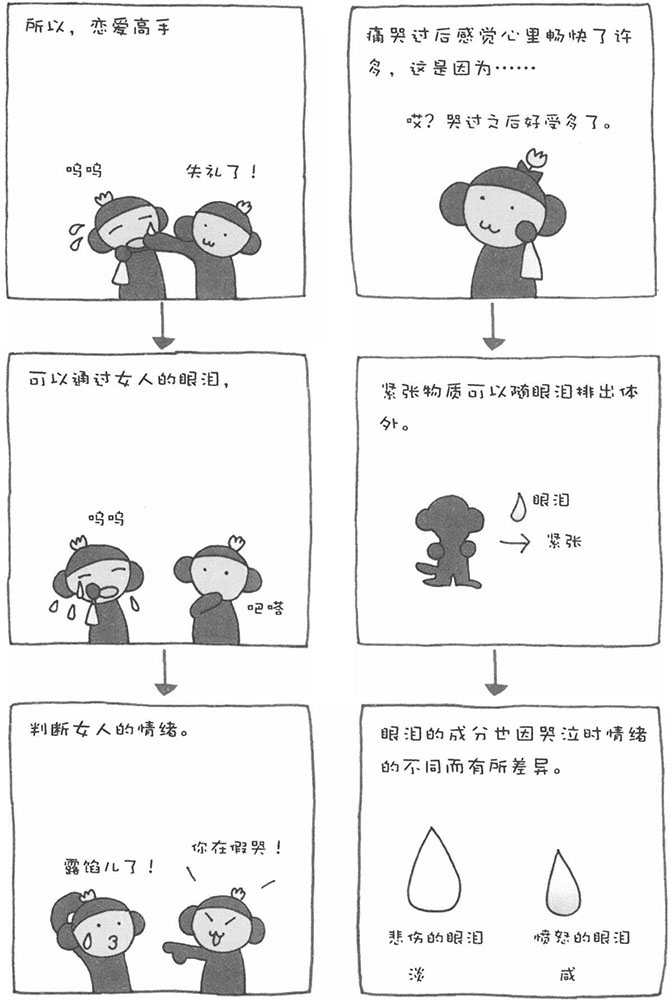

人在很多情况下都会流泪，但人为什么会哭泣、流泪呢？威廉姆·吉姆和卡尔·里根曾说过这样一句具有哲学意味的话：人不是因为悲伤才哭泣，而是因为哭泣才悲伤。意思是说"哭泣"这种生理反应比"悲伤"这种心理活动要来得早。
有趣的是，不仅在悲伤的时候，在高兴的时候，人也会哭泣。因为感情原因而流的眼泪，和人的自律神经有着紧密的联系。高兴也好、悲伤也罢，人的自律神经都会受到刺激，进入兴奋状态，从而引起流泪的现象。
威廉姆·H·弗雷二世博士认为，女性哭泣的理由中，有50％是因为"悲伤"，20％是因为"高兴"，10％是因为"生气"。与男性相比，女性更容易哭泣。这是由于男女感情构造的差异所造成的，不过并不是因为女性柔弱。有些女性会因为自己爱哭而感到自卑，其实完全没有这个必要。
此外，人在痛哭之后都会感到心情畅快了很多，也许您也有过类似的经历。这是因为哭泣可以将紧张物质发散到体外的缘故。哭泣也是减轻精神紧张的一种方式。日本人不太愿意在人前哭泣。实际上，为了减轻心里的紧张情况，还是多哭一哭为好。顺便说一句，哭泣时的情绪不同，眼泪的成分也有所差别。愤怒的泪水，含水量相对较少，钠的含量较多，所以比较咸；而悲伤的泪水则是水分比较多，味道比较淡。
